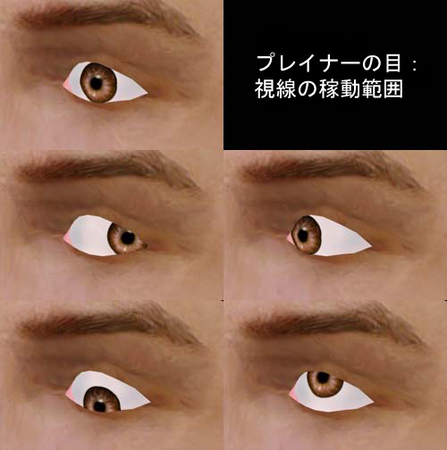
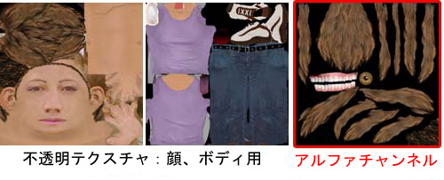
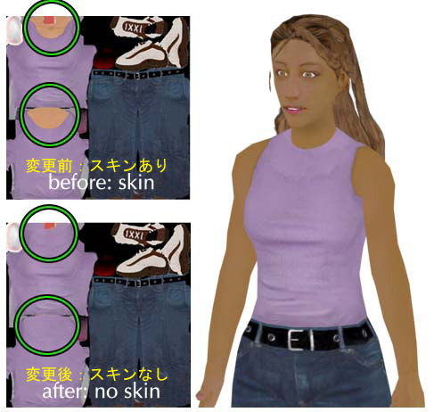
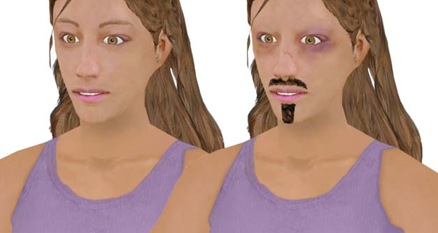

UDN
Search public documentation:
UnrealDemoModelsJP
English Translation
한국어
Interested in the Unreal Engine?
Visit the Unreal Technology site.
Looking for jobs and company info?
Check out the Epic games site.
Questions about support via UDN?
Contact the UDN Staff
한국어
Interested in the Unreal Engine?
Visit the Unreal Technology site.
Looking for jobs and company info?
Check out the Epic games site.
Questions about support via UDN?
Contact the UDN Staff
Unrealエンジンのモデリング実例
概要：デザインの選び方、およびキャラクターデザインやUDNの男女モデル製作において陥りやすい過ちについてご紹介します。初心者から中級レベルを対象にしています。 修正ログ：最終更新者Tom Lin（Main.DemiurgeStudios）により概要文の変更。原文作成者もTom Lin（Main.DemiurgeStudios）完成モデルのイメージ
 完成モデルのイメージは次のとおりでした。
完成モデルのイメージは次のとおりでした。
- ゲームの中心キャラクター
- 理想的なプロポーション
- 唇と音声の完全な一致
- 完全な多関節ハンド（手話可能レベル）
- 最新PCや家庭用ゲーム機などハードウェア環境への対応
- 次世代ハードウェアに対しても現行の機種と同様に対応する超多ポリゴンモデル
モデリング
モデリングのプロセスに取り掛かるにあたり、デザインについて、いくつか自問しました。- どれくらいのポリゴンを利用するべきか？
- モデルのスタイルをどうするのか？
- 同一シーンで何度も登場するのか、それとも一度だけか？
- 最も注目を集めるのはモデルのどの部分だろうか？
目
モデルの目にはプレイナー ポリゴンシートを使いました。この手法は、ポリゴンの効果をうまく利用して視線の動く目を作成するものです。詳細説明は、「UnrealModeling（［Unrealモデリング#視線の動く目］［Unrealモデリング］）」をご覧ください。
このイメージでは、シートを利用して可能となった視線の稼動範囲を示しています。この手法で最も難しい所は、虹彩をコントロールするボーンの最適な配置場所を見出すことです。ボーンの基礎配置はこの上なく重要で、視線がどちらに向いても虹彩のカーブが白目のカーブに合わなければなりません。そのため、リギングとモデルの両方について、角度をかなり微調整する必要性がでてきます。手
手は多様な動き（手話が可能なレベル）を要求される部分ですから、総ポリゴン数はかなり多くなります。モデル全体の総ポリゴン数4,400のうち、片方の手で約420ポリゴンとなります。両手でモデル全体の20％のポリゴン数となるのですから、かなりの割合です。 上のイメージをご覧ください。各指の関節の周囲には屈曲時に生じる形状の歪みを最小限に抑えるという重要な役割を果たす二つのセグメントがあります。再び同じモデルを作るなら、手にさらに多くのリソースを使うことになるでしょう。というのも、閉じた手の指関節が完全に定義できていませんし、手のひらと親指の接続部に、より多くのジオメトリを使いたいからです。
上のイメージをご覧ください。各指の関節の周囲には屈曲時に生じる形状の歪みを最小限に抑えるという重要な役割を果たす二つのセグメントがあります。再び同じモデルを作るなら、手にさらに多くのリソースを使うことになるでしょう。というのも、閉じた手の指関節が完全に定義できていませんし、手のひらと親指の接続部に、より多くのジオメトリを使いたいからです。
足
足の作成については既にUnrealModelingで少しお話しましたが、ゲームの中のパースペクティブでは普通の人間のプロポーションだと不自然に見えてしまいます。特に、キャラクターの上方や背後のカメラ視点から見下ろすことが多い足はその顕著な例です。この作用を補正するため、男性モデルの足を通常よりかなり大きくしました。一方、女性モデルの足のサイズは通常通りにしてあるので、両者の足のサイズの具合を比べて頂けると思います。
マッピング／テクスチャ作成
モデルにテクスチャを作成するのはかなり単純な作業ですが、アルファやレイアウトでいくつか注意すべき点があります。交差するアルファテクスチャ トライアングル
UnrealEdのテクスチャ作成で最も大切なことは「アルファテクスチャ トライアングルを交差させない」ことです。詳細説明は「UnrealTexturing（Unrealテクスチャリング?）」をご覧ください。簡単にご説明するなら、アルファチャンネルを持つテクスチャを貼った二つのトライアングルの交差は、Unrealのシステムを混乱させてしまうということです。その結果、一つのトライアングルがパッと現れたかと思ったら、次の瞬間背後に隠れるといった、不当な描画順序による問題が発生します。この様な事態に陥らないようなるべく注意しましょう。テクスチャのサイズと数量
私の作ったモデルには、それぞれ三つのテクスチャを作成しました。そのうち二つはUnreal Tournament 2003のデフォルトで使用されているのと同じ1024�1024です。三番目のテクスチャマップは、アルファチャンネル内に透明度情報を必要とするモデルパーツのために用意しました。このようにテクスチャを分類することで、不透明テクスチャを24ビットでセーブできるようになり、メモリを少し節約したり、UnrealEdでのアルファ設定という労を少し軽減できます。この第三のテクスチャは、男性モデルよりも女性モデルの方が大きくなりましたが、その原因は女性の毛髪テクスチャでより高いレゾリューションが必要だったからです。
このイメージのアルファ テクスチャマップには毛髪、歯、そして目があります。また、顔、腕、そして毛髪の束といったモデルのソリッドパーツを含むテクスチャマップもあります。衣服とスキンの交換
このテーマは、いくつかのサブタイトルがあるものの非常に単純です。この作業では、完全に自由自在なテクスチャ交換を目指すのか、スキントーンのあるトライアングルではテクスチャ数が一つに限られること、そしてすべての衣服トライアングルは別の衣服トライアングル上にあること、などを常に留意します。イメージの男性モデルは、この技法により全身の肌色を一瞬で交換した実例です。 しかし、女性モデルの現行テクスチャについて同様の処理をすると、下図のような問題に陥ることになります。
しかし、女性モデルの現行テクスチャについて同様の処理をすると、下図のような問題に陥ることになります。
 衣服テクスチャの相互交換を可能にするには、衣服テクスチャの設定に戻って、女性モデルのシャツの襟元を首まで引き上げます。
衣服テクスチャの相互交換を可能にするには、衣服テクスチャの設定に戻って、女性モデルのシャツの襟元を首まで引き上げます。

上図の修正済み女性モデル用衣服テクスチャなら、別の肌色にうまく交換できるようになりました。 複数テクスチャにトライアングルを分配する作業が苦でないならば、この方法でうまく対処できます。しかし多くのモデルは、色々なテクスチャにフレキシブルに対応します。例えば、この女性モデルはハイネックもよく似合っているようですが、はじめの襟の開いたスタイルも似合うようです。衣服上の一部にスキンを表現したテクスチャを交換（およびメモリ保存）したい場合はどうしますか？テクスチャを交換するとしても、使われる肌色が同じであれば交換用スキンはいくらでも用意できることになります。下図はその実例です。頭には全く違う二つのテクスチャマップを使っていますが、肌色がそのままですから、前例にあったような首に目障りな継ぎ目は見当たりません。
ボーンとエンベロープ
UDNモデルには、アニメーション用のキャラクタースタジオに既存の構造付属の追加ボーンを併用しました。すべての拡張ボーンを顔と頭のスケルトン構造に追加しました。顔のボーンの全リストは「SkeletalSetup（骨格のセットアップ?）」をご覧ください。 モデル間でのアニメーションデータ共有をしなかった理由はいくつかあります。第一の理由は、男性と女性のモデルはサイズがかなり違うことです。第二の理由は、頭のボーン ヒエラルキーはモデル間で完全に共通ではないことです。最後の理由は、精巧で緻密なアニメーションフレーム（リップシンクのレベルに適応した顔）を作るには、互いのデータを関連付けるのは賢明でないと考えたからです。つまり、各モデルにそれぞれPSAファイルが必要となり、アニメーションのロードによっては効率が悪くなる場合もあります。モデルと骨組みの交換
この資料で提供されているUDNモデルを、ご自身のゲームデモやその他の目的で利用したい人もいると思います。付属のリギングを変更したり、UDNモデルを既存のスケルトン構造に当てはめて利用したいという場合もあるでしょう。UDNモデルの使用
UDNモデルでは、とても簡単に新しいリギングを採用できます。骨組みの複雑さにもよりますが、舌や虹彩などの特性は無視してしまって大丈夫です。また、より自分のニーズに合うモデルに部分的に変えてしまいたい場合もあるでしょう。例えば、手を制御するボーンが一つだけの場合、不自然に広がった指をもっとフレキシブルで自然な形状にしたいことでしょう。ただし、UDNモデルに手持ちのスケルトン構造を適用すると、大幅な変更が原因でモデル動作に不自然さや不完全さが生じることがありますのでご注意ください。 当然ながら、エンベロープ、頂点のウェイト、および分類リギングなどの処理は自分で行います。UDNのリギングを使う
UDNのリギングを新たなモデルに使うのは、既存のアニメーション群を活用できるとはいえ、その手順はなかなか手強いものです。良い点といえば、限られたリギングの効果を狙う（例えば目の動きだけで、口や舌の発音動作に使わない）場合に、新規リギングやボーンとしてUDNモデルの全ボーンを取り込む必要がないことです。つまり、ボーンのブランチを削除した、または作成が不完全という場合も、Unrealは問題なくそのモデルをインポートできるということです。とはいえ、UDNのリギングを使用する方法はいくつかあります。 *UDNモデルとサイズ、ポーズ、および骨格が非常に似たモデルを作成し、次に大体同じように作成中モデルの対応部分に取り付けます。 *ある全く新しい二足歩行物を作り、そこにUDNモデルのボーンと同名の骨格構造を作成します。ここで重要なのは、UDN rigの構造を複製する必要はありませんが、アニメーションをそのまま使いたい場合はボーン名をUDN rigにあるボーン名に対応させることです。 *既存リギングをそのままに、UDNモデルをそっくり利用することもできます。スクラッチからは何も作成しない代わりに、古いモデルを「クレイ」として補修し、新たな形状に変えて行きます。添付ファイル
ページの最後に、ZIPファイルの一覧表があります。ここにあるファイルはすべてUDNモデルの作成に利用したソースファイルで、PSKやPSAファイルと同様、直接UnrealEdにインポートして利用できます。- UDNMale.zip：リギング済の「.max」モデル、PSAやPSK、および3DS Maxでの表示に必要な三つのテクスチャが入っています。
- UDNFemale.zip：リギング済の「.max」モデル、PSAやPSK、および3DS Maxでの表示に必要な三つのテクスチャが入っています。
- UDNMaleSourceAnims.zip：アニメーションやvisemeのセットを構成する「.max」の全ソースファイルが入っています。（ファイルサイズが大きいのでご注意ください。）
- UDNFemaleSourceAnims.zip：アニメーションやvisemeのセットを構成する「.max」の全ソースファイルが入っています。（ファイルサイズが大きいのでご注意ください。）
- UDNMapping.zip：UDNMale.zipおよびUDNFemale.zipで提供されているテクスチャマップのレイアウトが入っています。